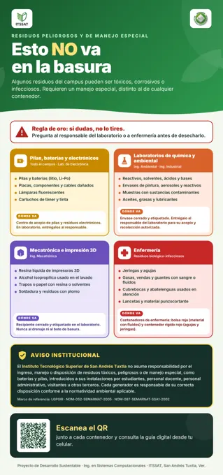

Material educativo
Separación de residuos cotidianos
Residuos comunes, aprovechamiento y recomendaciones de separación.
QR actualizado: abre esta guía en EcoSys.
 EcoSysITSSAT · ISC 304A
EcoSysITSSAT · ISC 304AInfografías del proyecto QR e Infografías ITSSAT. Cada recurso cuenta con una versión de alta resolución y un nuevo código QR que dirige a EcoSys.
Residuos comunes, aprovechamiento y recomendaciones de separación.
QR actualizado: abre esta guía en EcoSys.

Elementos que requieren cuidados y canales autorizados.
QR actualizado: abre esta guía en EcoSys.

Acciones diarias para el cuidado del entorno.
QR actualizado: abre esta guía en EcoSys.
Explora el recorrido del campus, participa en la encuesta de diagnóstico o utiliza la calculadora de residuos.
Aprende, participa y contribuye al diagnóstico ambiental del ITSSAT.